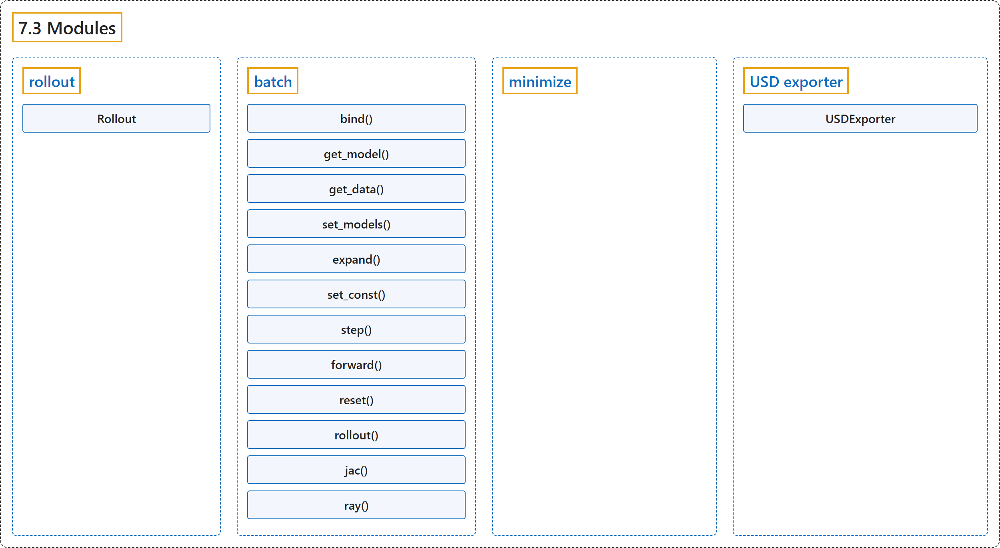

7.3 Modules
Classification

Glossary
| Term | Definition | 中文翻译 | Source |
|---|---|---|---|
| 7.3 Modules 模块 |
(context) "The mujoco package contains two sub-modules: mujoco.rollout and mujoco.minimize" | （语境）mujoco 包包含两个子模块：mujoco.rollout 和 mujoco.minimize | Google DeepMind, n.d., "Modules", para. 1 |
| rollout rollout 模块 |
"The module addresses a common use-case where tight loops implemented outside of Python are beneficial: rolling out a trajectory (i.e., calling mj_step in a loop), given an initial state and sequence of controls, and returning subsequent states and sensor values." | 该模块针对一种常见用例，即在 Python 之外实现的紧凑循环更有利的情形：展开一条轨迹（即在循环中调用 mj_step），给定初始状态和控制序列，返回随后的状态和传感器值。 | Google DeepMind, n.d., "rollout", para. 1 |
| Rollout Rollout 类 |
(context) "To use multiple thread pools from multiple threads, use Rollout objects." | （语境）要从多个线程使用多个线程池，请使用 Rollout 对象。 | Google DeepMind, n.d., "rollout", para. 7 |
| batch batch 模块 |
"mujoco.batch.Batch runs many simulations of one model on a thread pool and exposes their fields as rows of NumPy arrays." | mujoco.batch.Batch 在一个线程池上运行同一模型的许多仿真，并把它们的字段作为 NumPy 数组的行提供出来。 | Google DeepMind, n.d., "batch", para. 1 |
| bind() bind() 方法 |
"bind(name) returns a live nsim x ... array over an MjData field." | bind(name) 返回一个覆盖某个 MjData 字段的实时 nsim x ... 数组。 | Google DeepMind, n.d., "batch", item 1 |
| get_model() get_model() 方法 |
"get_model(sim) and get_data(sim) materialize one simulation as an MjModel and MjData, for rendering or for any function;" | get_model(sim) 和 get_data(sim) 把一个仿真具体化为 MjModel 和 MjData，用于渲染或任何函数； | Google DeepMind, n.d., "batch", item 3 |
| get_data() get_data() 方法 |
"get_model(sim) and get_data(sim) materialize one simulation as an MjModel and MjData, for rendering or for any function;" | get_model(sim) 和 get_data(sim) 把一个仿真具体化为 MjModel 和 MjData，用于渲染或任何函数； | Google DeepMind, n.d., "batch", item 3 |
| set_models() set_models() 方法 |
"set_models(models) runs each simulation on a model of the caller’s, an MjModel per simulation or one for all, instead of the batch’s model, in place of expanded fields;" | set_models(models) 让每个仿真在调用者提供的模型上运行（每个仿真一个 MjModel，或全部共用一个），而不是在批量对象自己的模型上运行，以此代替扩展字段； | Google DeepMind, n.d., "batch", item 4 |
| expand() expand() 方法 |
"expand(name) gives an MjModel field, or an MjOption field named opt. |
expand(name) 为一个 MjModel 字段或名为 opt. |
Google DeepMind, n.d., "batch", item 5 |
| set_const() set_const() 方法 |
"set_const runs mj_setConst per simulation, and the fields it derives become per-simulation as well." | set_const 对每个仿真运行 mj_setConst，它推导出的字段也随之成为逐仿真的。 | Google DeepMind, n.d., "batch", item 5 |
| step() step() 方法 |
(context) "step(ids, nstep), forward(ids), reset(ids, keyframe) and set_const(ids) run on the simulations ids, sorted, unique and non-negative integers or a boolean mask, or on all of them." | （语境）step(ids, nstep)、forward(ids)、reset(ids, keyframe) 和 set_const(ids) 在仿真 ids 上运行（ids 为已排序、不重复的非负整数或布尔掩码），或在全部仿真上运行。 | Google DeepMind, n.d., "batch", item 6 |
| forward() forward() 方法 |
(context) "step(ids, nstep), forward(ids), reset(ids, keyframe) and set_const(ids) run on the simulations ids, sorted, unique and non-negative integers or a boolean mask, or on all of them." | （语境）step(ids, nstep)、forward(ids)、reset(ids, keyframe) 和 set_const(ids) 在仿真 ids 上运行（ids 为已排序、不重复的非负整数或布尔掩码），或在全部仿真上运行。 | Google DeepMind, n.d., "batch", item 6 |
| reset() reset() 方法 |
(context) "step(ids, nstep), forward(ids), reset(ids, keyframe) and set_const(ids) run on the simulations ids, sorted, unique and non-negative integers or a boolean mask, or on all of them." | （语境）step(ids, nstep)、forward(ids)、reset(ids, keyframe) 和 set_const(ids) 在仿真 ids 上运行（ids 为已排序、不重复的非负整数或布尔掩码），或在全部仿真上运行。 | Google DeepMind, n.d., "batch", item 6 |
| rollout() rollout() 方法 |
"rollout(nstep, control, control_spec, record, ids) steps as rollout does, records any MjData fields or state vectors after every substep, and returns them as n x nstep x ... arrays." | rollout(nstep, control, control_spec, record, ids) 像 rollout 那样步进，并在每个子步之后记录任意 MjData 字段或状态向量，以 n x nstep x ... 数组返回。 | Google DeepMind, n.d., "batch", item 8 |
| jac() jac() 方法 |
"jac(body, point, ids) and ray(pnt, vec, ..., normal=False) evaluate mj_jac and mj_ray per simulation, with a body per simulation and a body to exclude per ray if given, and the surface normals of the hits on request." | jac(body, point, ids) 和 ray(pnt, vec, ..., normal=False) 对每个仿真计算 mj_jac 和 mj_ray，可为每个仿真给一个刚体、为每条射线给一个要排除的刚体，并可按需返回命中点的表面法线。 | Google DeepMind, n.d., "batch", item 9 |
| ray() ray() 方法 |
"jac(body, point, ids) and ray(pnt, vec, ..., normal=False) evaluate mj_jac and mj_ray per simulation, with a body per simulation and a body to exclude per ray if given, and the surface normals of the hits on request." | jac(body, point, ids) 和 ray(pnt, vec, ..., normal=False) 对每个仿真计算 mj_jac 和 mj_ray，可为每个仿真给一个刚体、为每条射线给一个要排除的刚体，并可按需返回命中点的表面法线。 | Google DeepMind, n.d., "batch", item 9 |
| minimize minimize 模块 |
"This module contains optimization-related utilities." | 该模块包含与优化相关的工具。 | Google DeepMind, n.d., "minimize", para. 1 |
| USD exporter USD 导出器 |
"The USD exporter module allows users to save scenes and trajectories in the USD format for rendering in external renderers such as NVIDIA Omniverse or Blender." | USD 导出器模块允许用户把场景和轨迹保存为 USD 格式，以便在外部渲染器中渲染，例如 NVIDIA Omniverse 或 Blender。 | Google DeepMind, n.d., "USD exporter", para. 1 |
| USDExporter USDExporter 类 |
"The USDExporter class in the mujoco.usd.exporter module allows saving full trajectories in addition to defining custom cameras and lights." | mujoco.usd.exporter 模块中的 USDExporter 类除了可以定义自定义相机和灯光，还允许保存完整的轨迹。 | Google DeepMind, n.d., "USDExporter", para. 1 |
| update_scene() update_scene() 方法 |
"updates the scene with the latest simulation data passed in by the user." | 用用户传入的最新仿真数据更新场景。 | Google DeepMind, n.d., "USD Export API", item 1 |
| add_light() add_light() 方法 |
"adds a light to the USD scene with the given properties post hoc." | 事后向 USD 场景添加一个具有给定属性的灯光。 | Google DeepMind, n.d., "USD Export API", item 2 |
| add_camera() add_camera() 方法 |
"adds a camera to the USD scene with the given properties post hoc." | 事后向 USD 场景添加一个具有给定属性的相机。 | Google DeepMind, n.d., "USD Export API", item 3 |
| save_scene() save_scene() 方法 |
"exports the USD scene using one of the USD filetype extensions .usd, .usda, or .usdc." | 用 USD 文件类型扩展名之一导出 USD 场景：.usd、.usda 或 .usdc。 | Google DeepMind, n.d., "USD Export API", item 4 |
References
Google DeepMind. (n.d.). Python. MuJoCo Documentation (Version 3.17.0). Retrieved October 31, 2026, from https://mujoco.readthedocs.io/en/stable/python.html